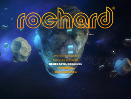
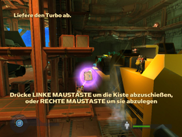
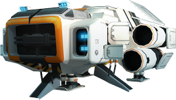

Rochard
Dieser Artikel wurde für die folgenden Ubuntu-Versionen getestet:
Ubuntu 14.04 Trusty Tahr
Zum Verständnis dieses Artikels sind folgende Seiten hilfreich:
Rochard  - John Rochard, seines Zeichens Minenarbeiter der Skyrig Corporation, und sein Team suchen im Weltraum nach Asteroiden mit Mineralvorkommen. Im Herzen eines Asteroiden stößt er auf einen Gegenstand, welcher außerirdischen Ursprungs ist und damit nimmt das Chaos seinen Lauf. Fehlfunktionen auf dem Raumschiff sind der Anfang...
- John Rochard, seines Zeichens Minenarbeiter der Skyrig Corporation, und sein Team suchen im Weltraum nach Asteroiden mit Mineralvorkommen. Im Herzen eines Asteroiden stößt er auf einen Gegenstand, welcher außerirdischen Ursprungs ist und damit nimmt das Chaos seinen Lauf. Fehlfunktionen auf dem Raumschiff sind der Anfang...
Mit seinem G-Lifter bewaffnet stellt sich der Protagonist den Herausforderungen.
|  |  |
| Hauptmenü | Spielszene |
Installation¶
Vorbereitend ist das Paket
libdb1-compat
 mit apturl
mit apturl
Paketliste zum Kopieren:
sudo apt-get install libdb1-compat
sudo aptitude install libdb1-compat
zu installieren [1].
Entwicklerseite¶
Rochard kann direkt auf der Entwicklerseite erworben werden. Diese Variante beinhaltet zusätzlich einen Key für Steam. Der Installationsprozess entspricht dem vom Humble Bundle oder Steam.
Humble Bundle¶
Nach dem Erwerb des Humble Indie Bundles Von der persönlichen Seite das .tar.gz-Archiv für die gewünschte Rechnerarchitektur herunterladen und entpacken [2] - z.B. nach ~/Spiele. Anschließend das Spieleverzeichnis öffnen. Rochard kann im Terminal über ./Rochard gestartet [3] werden. Auf Wunsch einen Menüeintrag [4] vornehmen.
Hinweis:
Es besteht die Möglichkeit, das Bundle im Software-Center einzulösen. Auf der persönlichen Seite "Download for ubuntu" anklicken und den Anweisungen folgen. Das ausgewählte Spiel wird zur Paketquelle hinzugefügt und kann bequem per Software-Center installiert werden. Hier "Kaufen..." wählen - das Konto wird dabei nicht belastet. Sollten Daten zur Zahlung abgefragt werden, ist etwas schief gelaufen.
Ubuntu Software-Center¶
Rochard kann über das Ubuntu Software-Center erworben und installiert werden. Updates werden über die Paketverwaltung zur Verfügung gestellt.
Spieledaten¶
Die Spieledaten sind im Homeverzeichnis unter ~/.config/unity3d/Recoil Games/Rochard/ zu finden:
| Spieledaten | |
| Datei | Beschreibung |
| GAME.DAT | Spielstand |
| PROFILE.DAT | Einstellungen, Fortschritt, Statistiken et cetera. |
| journal.txt | Backups der obigen Daten. |
Einstellungen¶
Nach dem Spielstart über "Options -> Text" unter "Language" die gewünschte Sprache auswählen.
| Einstellungen | |
| Menüpunkt | Beschreibung |
| "AUDIO" / "TON" | Klang- und Musiklautstärke anpassen. |
| "VIDEO" / "BILD" | Auflösung, Vollbild- / Fenstermodus und Gammakorrektur. |
| "TEXT" | Anzeige von Untertiteln, Hinweisen und Spielsprache regeln. |
| "CONTROLS" / "STEUERUNG" | Eingabegerät auswählen und Tastaturbelegung. |
Tastenkürzel¶
| Tastenkürzel | |
| Taste(n) | Funktion |
| F11 / F12 | Bildschirmfoto aufnehmen (HD / Standardauflösung) - diese sind im Installationsverzeichnis unter Screenshots zu finden. |

Infobox¶
| Rochard | |
| Originaltitel: | Rochard |
| Genre: | Breakout |
| Sprache: |           |
| Veröffentlichung: | 2012 |
| Publisher: | Recoil Games |
| minimale Systemvoraussetzungen: | 2,6 GHz-Prozessor / 1 GB RAM / 3 GB Festplattenspeicher |
| Medien: | Download |
| Strichcode / EAN / GTIN: | - |
| Läuft mit: | nativ |


- Erstellt mit Inyoka
-
 2004 – 2017 ubuntuusers.de • Einige Rechte vorbehalten
2004 – 2017 ubuntuusers.de • Einige Rechte vorbehalten
Lizenz • Kontakt • Datenschutz • Impressum • Serverstatus -
Serverhousing gespendet von